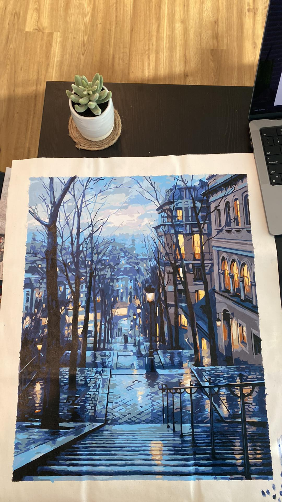
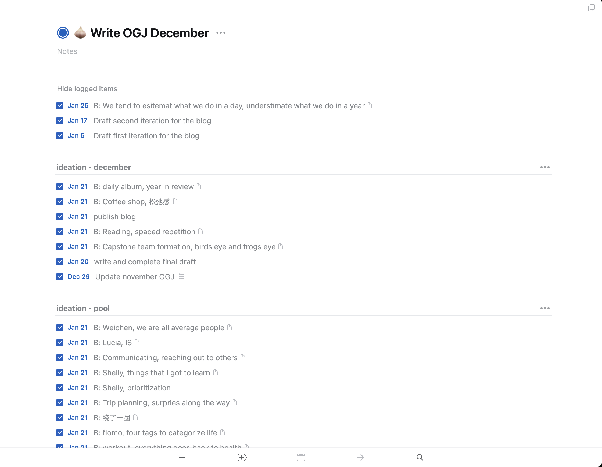
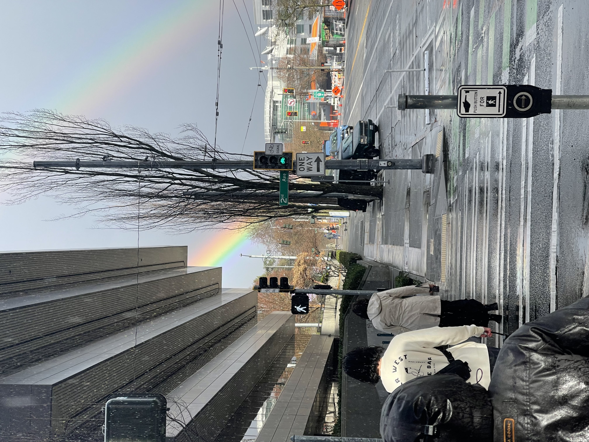
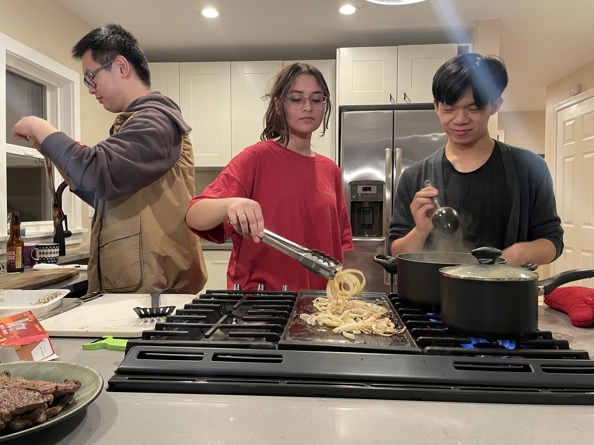
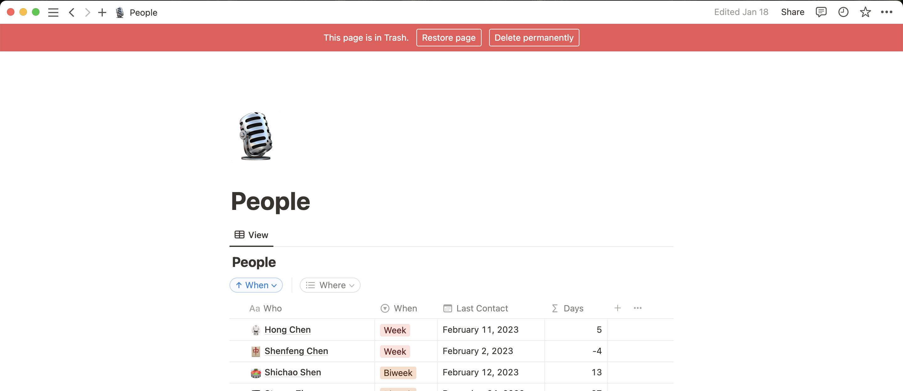
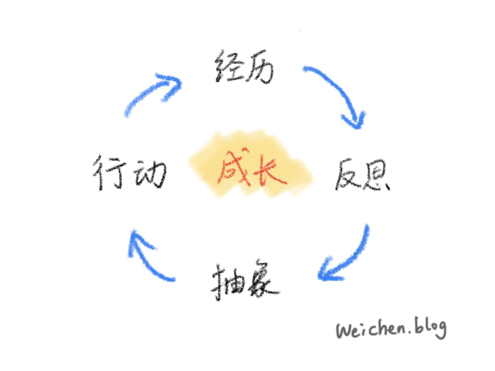

Ongoing Journey - January 2023
Blog drafts, cover the canvas
mihika's drawing she is too good12 issues past so far the biggest growth I had for my blog
…is the amount of time I spent on it :D
December 2021 I spent 1 hour and 53 minutes on the issue, and fast forward to now, it taken me 15+ hours to finish the draft for December 2022.
drafts for blogs for decemberI consider myself a perfectionist, wanting to make my work perfect the moment I put them out. For school, it’s a lot of back-and-forth drafts, and for blog, I tend to think with a blank page for hours, before I put a single words on.
想到五分就开干，干到八分你就整明白了。
Via MacTalk - 41 个新年开工工作建议. I’ve heard similar term called ‘fill the canvas’, putting it in plain words, two shitty drafts are better than one well-done one.
So yeah, started from this issue I wrote with much less thinking, so far I am on the fifth draft which took me an overall, 45 minutes :)
Dad taught me 谋定而后动 and realized I’ve done the exact opposite. Right now I felt more aligned with ‘letting out action before words’, perhaps age and experience do matter in this regard.
Seattle trip, making deletions in life
we saw double rainbows after the sky cleared upIn Seattle we were walking outside one day when the storm hit. We decided to stick with our plan and it took us so much energy, I couldn’t complete my last task for that day - picking up our friend from the airport.
Laying in bed feeling a bit guilty, thought to myself, we really put too much on the plan. With everything that people recommended to us we wanted to check out all the places, we ended up spreading ourselves too thin.
Thinking back to previous semesters at school, it has always been easier to do more, adding more things to my agenda. There seemed to be too many things that I wanted, to the point that I wasn’t able to focus on any.
What do I want out of my time, and how should I prioritize, that was the seed that was left, while staring at the cream ceiling of the empty master bedroom.
people I was with on the trip, us cooking dinner together :)Deleting people tab
in case anyone curious what the people tab is, it's a place for me to keep track of when I talked with each personBasically the title. After the trip got back to my dorm on a Sunday night, while drawing names down had this sudden thought to myself, did I reach out to them because I wanted to, or did I reach out to them because their time was up on the tab?
I wasn’t able to tell the difference, and again the sense of exhaustion kicked in.
Partly because how the spreadsheet was set up, though more so because of how I maintained it. Felt through time I started to reach out of fear, not wanting to lose connection with people I have.
Looking at the ceiling while notion takes its time deleting the spreadsheet, I wonder if there is another way to do it, instead of keeping people as a spreadsheet, write about them.
绕了一圈, growing up
Before I was born, one day my mom went to the bank to deposit her check, and as she walked in the front door, she saw this 25ish man with an older lady, appeared to be her mom, leaning forward at the front desk, as the lady asked for job opportunities they have for her son.
Of course you don’t just get a job at a bank by asking the teller, as the pair walked out of the door, disappointed, my mom heard the son wining ‘if you would have pushed me a bit more, I would never have been like this’.
That’s the story I heard while growing up, as my mom would often say
他变老了，但他没有长大
and with time, growing old and not growing up also became part of my fear. With the people tab deleted, laying flat on my chair, I can feel fear creeping into my mind, as I realized a year and a half of maintaining the spreadsheet, I came back with nothing.
And then I thought to myself, what is 长大, and what is, growing up?
placeholderSomething drawn by Weichen, the process of experience -> reflect -> label -> act, or as my dad often says to me, 螺旋升天 lol.
Now that I have had the experience, just have to reflect on how I can do better, felt relieved when I thought about that.